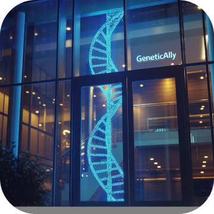
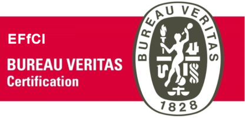
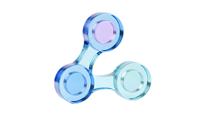

오창 · 본사 · 제1공장
(28126) 충청북도 청주시 청원구 오창읍 각리1길 32
3,300㎡
 HOME
HOMEGlobal Leader for Beauty and Health

마크로케어는 2002년에 설립되어, 화장품 원료 및 식품 원료생산의 선두 업체로 발전해왔습니다.
2004년 충북 오창 테크노밸리에 바이오/천연물/합성의 3개 생산동과 부설 연구소를 건립하여, 원활한 연구 개발 및 제품 생산에 노력을 기울이고 있습니다.
당사는 국제규격인증 (ISO 9001, ISO 14001, FSSC 22000)을 보유하고 있으며, 환경 경영 시스템, INNO-BIZ(기술혁신형 중소기업) 2016 우수벤처기업(글로벌 분야)에도 선정되어 글로벌 시대에 맞는 자격을 갖추고 있습니다.
당사는 혁신적인 기술을 적용하여 신시장을 개척함으로써 최고의 제품을 위한 최고의 원료를 공급하기 위해 임직원들의 노력을 발판으로 성장해 나가고 있습니다.
Company Facts
L'Oreal, Estee Lauder, (주)아모레 퍼시픽, (주)LG 생활건강 등
(주)동서식품, (주)동아제약, 샘표식품(주), 롯데주류, CJ제일제당 등
Credentials

EFfCI GMP 인증
ISO 9001, ISO 14001
FSSC 22000
기술혁신형 중소기업
글로벌 강소기업
Our Expertise
Research & Development
무기합성 · 유기합성 · 고분자 응용 기술 · 발효기술 · 기능성 천연소재 · 당전이기술 · 고순도 정제기술 · 생물 전환 기술 · 나노기술 · 추출 기술 등

Cosmetic Ingredients
미백 · 보습 · 주름개선 · 항염효과 · 자극완화 · 방부제 등
Food Ingredients
효소처리 스테비아 제품 · Rebaudioside A 고순도 제품 · 감초추출물 등
Production Facilities


(28126) 충청북도 청주시 청원구 오창읍 각리1길 32
3,300㎡


(27902) 충청북도 증평군 도안면 증평2산단로 239
8,000㎡